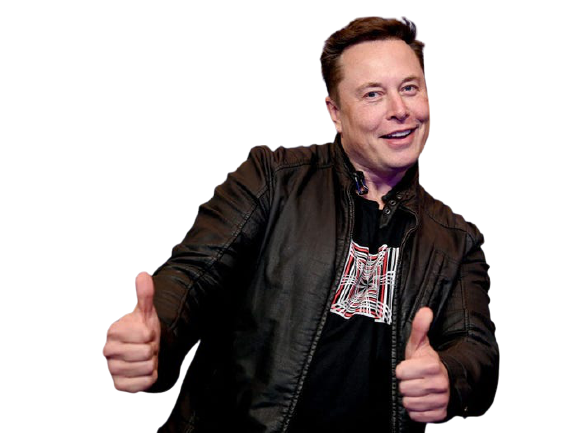

Elon Musk
Entrepreneur and business magnate

Elon Musk at The X event in the past.
Timeline of achievements
- 1983 - By age 12, Elon Musk sold his first ever game "Blastar" to a magazine that was called PC and Office Technology for $500.
- 1995 - Elon Musk started an internet city guide web software company Zip2 with his brother Kimbal.
- 1999 - Zip2 was sold to Compaq for $307 million USD.
- 1999 - Co-founded X.com with $10 million coming from the sale of Zip2
- 2000 - X.com merged with Confinity in order to form PayPal.
- 2002 - Elon Musk founded SpaceX with $100 million USD of his own. - eBay bought PayPal for $1.5 billion USD. Elon Musk got $165 million.
- 2002 - eBay bought PayPal for $1.5 billion USD. Elon Musk got $165 million.
- 2004 - Elon Musk joined Tesla's board of directors as Chairman leading the Series A round of investment.
- 2006 - Elon Musk provided the financial capital and concept for SolarCity which were founded by his cousins Pete Rive and Lyndon.
- 2007 - Elon Musk became CEO and product architect of Tesla.
- 2011 - Elon Musk announced plans to send humans to Mars in 10-20 years.
- 2013 - SolarCity became the world's second-largest solar power provider.
- 2013 - Elon Musk revealed his concept for hush-speed transportation through reduced-pressure tubes.
- 2014 - Development of starlink project.
- 2015 - Open-AI was co-founded by Musk.
- 2016 - SolarCity was acquired by Tesla. - Neuralink was co-founded by Musk.
- 2017 - The Hyperloop test run began in Nevada.
- 2018 - First Starlink prototype satellites launched into orbit.
“Constantly think about how you could be doing things better.
Keep questioning yourself”